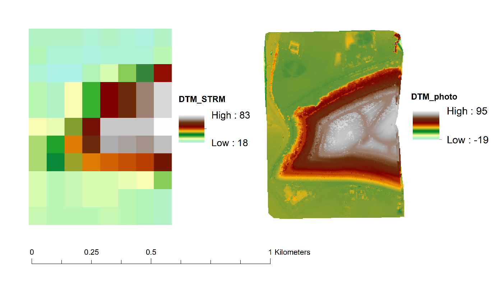
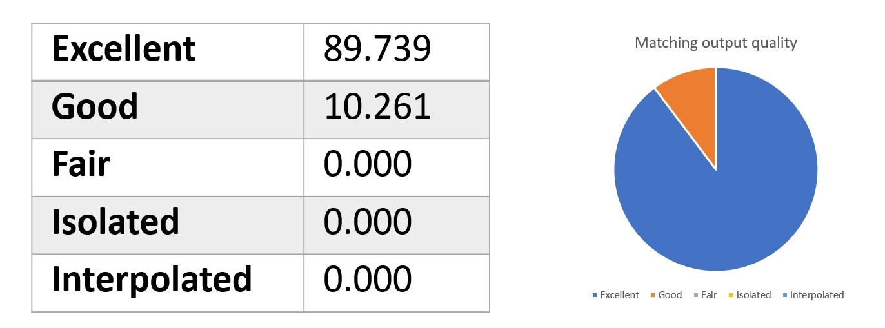

Comparison Between Our DTM and DTM From SRTM
We download other data about the same area from the SRTM. This is a global DTM project that provided data with a resolution of 90m at the equator. The vertical error of this dataset is reported to be less than 16m. And because this dataset is a global scale dataset, there are several interpolations techniques used in the data, so it is hard to tell the exact accuracy of the dataset.
Apparently, due to the pixel size, global data is not suitable for fine-scale research. And our DTM is much more precise and shows a lot of details. Besides, the SRTM data does not take the water area into account while our production does. Therefore, we have a minus value for the elevation.

Iteration Results
Matching Output quality:
Uncertainity:
The primary uncertainty source of the DTM we produced is the algorithm behind the software we used. The ERDAS IMAGINE uses the Enhanced Automatic Terrain Extraction module. Based on the parameters being set, the results will be different.
In this assignment, we produce a two by two meters DTM based on two aerial images. It processed eight iterations and got a final RMSE 0.092. If we create the DTM based on more images, the accuracy will be higher, but at the same time, the processing time will be longer. And the number of GCP will also matter. The more GCPs we have, the more accurate the result we can get. But GCP also means the cost to do the measurement in the field. So there needs to be a balance between the two.